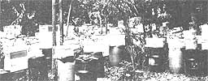
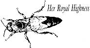
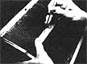
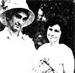

Many amateur apiarists are discovering that honey production is only part of the challenge and reward of keeping bees. The next
logical step can be learning the fascinating art of . . .
The queen bee truly lives up to her royal reputation: An efficient, untiring, yet graceful monarch that can insure either the survival or the demise of her subjects, she is the key to a honeybee colony's operation. Filling up to 1,500 cells a day (at the peak of the season) with fertilized ova that will hatch into worker bees, she's attended by a fanatically loyal following of nurses that fan her, clean her, and generally see to Her Highness's comfort as she goes about her sole and constant chore of laying eggs. The mystery and reverence surrounding this winged ruler have long played major roles in the lore of beekeeping . . . and rightly so. A "good laying" queen (one that deposits brood eggs in solid, even patterns across the comb) is a valuable commodity, as any apiarist will confirm.
Queens are, however, exceedingly delicate creatures and are subject to any of a number of mishaps. A ruler might have an accident on her initial mating flights, for instance, or she could be replaced by a new, younger queen (in a process called supersedure ), or she might-for reasons often unknown-suddenly begin to lay useless drone brood. A hive can't get along without a queen bee, though, and since one can be lost all too easily, it behooves a serious apiculturist to learn and practice queen-rearing methods before necessity drives him or her to replace a royal layer. When these basic techniques are mastered, a beekeeper-turned-queen-breeder can also use that new knowledge to create totally new colonies, divide old hives, revive sickly ones, or even raise queens on a large scale for sale to other apiarists. The possibilities are abundant, so if you're already a practicing beekeeper (with any number of hives), you can use the methods described in this article to widen your range of abilities, delve deeper into the mysteries of queen production, and maybe even begin a side business to augment your income from honey sales.
DO IT YOURSELF . . . SIMPLY
All queen-rearing methods are centered on one basic fact of bee biology: Nurse bees in a hive can turn one-day-old female (worker) larvae into queens by enlarging the young grubs' cells and feeding them a steady diet of hormone-rich royal jelly. Hence, every technique is based upon introducing tiny, still uncurled eggs (which stand up in their cells and look a bit like slivers) or hatched one-day-old larvae (which recline and may be beginning to curl) to a group of queenless-and thus highly motivated-nurse bees.
The easiest way to raise queens, and the one most often used by hobbyist and backyard beekeepers, is the Sommerford system, which was named after the Texas apiarist who developed it at the beginning of this century. This simple and natural technique allows the bees themselves to choose the brood cells in which they'll nourish and rear a new queen, insuring production of a strong, healthy ruler that's especially adapted to a particular hive in a particular location . . . unlike a packaged queen, which may be unsuited to her new environment.
To raise one or several queens the Sommerford way, first select your best and busiest hive, then remove two frames of brood comb (sealed cells filled with eggs) and another frame that contains honey, the queen, and a number of adhering bees. Next, install them all in an empty hive or a nucleus (a small, temporary hive, usually called a nuc, that's used just for this purpose), tucking the brood frames snugly in the middle racks. It's much better to do this during a good honey flow . . . that is, when many nectar-producing flowers are in bloom. If that isn't possible, provide the deprived parent hive with a feeder of sugar-and-water syrup or thinned honey. Then leave the hive alone for nine or ten days. The deserted bees will soon become aware that their queen is gone and will start building queen cells in the remaining brood frames.
Later, when you open the hive to inspect the new peanut-shaped structures that contain the royal-jelly-fed pupae, destroy any cells that are uncapped, small, or appear to be defective (these will be dark and smooth-sided). Carefully extract the healthy cells, along with a bit of surrounding comb. Handle these pupal cocoons with great care, as excessive shaking or jarring can damage a developing queen.
These perfect cells can then be pressed-together with bee-covered frames of worker brood and some empty drawn comb-into empty hives or nucs to start new colonies . . . or the waxy "queen bundle" can be affixed somewhere along the top of a frame in an established hive. As each cell hatches (usually 16 days after the egg was laid), its young virgin queen will emerge, investigate her surroundings, and establish her sovereignty in the hive. Afterward, she'll take off on the first of several nuptial flights, during which she'll mate with a number of drones that will fertilize her for a two- to three-year life of egg production.
VARIATIONS ON A THEME
An offshoot of the Sommerford system is the Miller method (named for Dr. C.C. Miller, a contemporary of Sommerford who was a physician before he took up beekeeping). With this method, the breeder actively "encourages" his or her bees to produce viable queen cells in the following way: The beekeeper puts a frame of empty drawn comb in the middle of a nuc, along with a queen, lots of bees, and other frames of brood and honey (as previously described). After a week-when the originally empty frame is full of eggs, larvae, and capped brood-the breeder cuts carefully with a sharp knife along the bottom edge of the wax comb, directly beneath clusters of hatched larvae that are still in the cells. These larvae should be 18 to 24 hours old. [EDITOR'S NOTE: The distinction between egg age and larva age sometimes gets confused in beekeeping literature. An egg normally takes about three days to hatch. Most queen rearing discussions refer to thelarva's age. Hence, a one-day-old grub was actually laid about four days earlier!] If the larvae have curled all the way into the shape of the letter C, they're already too old. After the beekeeper places the trimmed frame in a queenless hive, the resident bees will automatically draw out beautiful queen cells along the bottom edge, and the infants within will be nursed into queen pupae that can be removed after ten days in order to start new colonies or to requeen struggling ones.
Another simple variation on the queen-rearing theme is the double-brood-chamber method, which is particularly well suited to the small-scale beekeeper who's short on equipment or space but wants to create a new queen and thereby increase his or her winged flocks. In this method, a normal brood nest (with queen, attendant bees, brood frames, and honey stores) is left intact on the bottom story of a hive. Over this are placed, in succession, the regular queen excluder, a honey super or two, another excluder, and the second, queenless, brood box. If frames of honey and young unsealed brood are positioned in the top section, in due time the workers will raise several queen cells . . . which can then be collected for requeening colonies or for storing in nucs.
QUEENS FOR SALE
Compared with the amateur "backyard" methods we've described, rearing queens for the market requires considerably more skill, greater precision in timing, and to-the-minute record keeping. And because the biggest demand for queens usually comes in the spring, most commercial rearers live in warm climes, where they can get a jump on the season.
Techniques vary slightly from one apiarist to another, but breeding marketable queens-a process that can start as early as February and continue through November in some regions-always involves grafting (or transferring) specially selected larvae into manufactured wax cups that are kept in special "nursery" hives. The basic system was first laid out in G.M. Doolittle's 1888 book, Scientific Queen-Rearing, in which the author recommended using a whittled-down toothpick as the grafting tool!
A process used today at the Blanchet Apiary in Riverview, Florida (see the sidebar accompanying this article for more on that mom-and-pop business) illustrates the modernized, four-step process for raising good, market-quality Italian queens. The breeders first choose a proven laying queen, one with a good record for the past year or two. Once the "mother" has been singled out from her sisters, her back is marked with a spot of bright enamel paint for easy identification (colored nail polish can also be used), and she's normally kept for only one year thereafter. The process of large-scale queen breeding then begins in the single-story "mother hive", a brood chamber containing goodly quantities of young bees, honey, and pollen. Confined to one brood frame by a screen excluder on either side, the queen stays in that narrow home the rest of her days, continuing to lay eggs on the only frame available to her. Every day, Mr. Blanchet removes a frame full of one-day-old eggs and places it outside of the excluder before transferring the queen to a new, empty frame. The racks are rotated in this way for two more days, until one of them contains new larvae ready for grafting.
The best environment for grafting is one that is close to the bee yard, well-lighted, and warm (bee larvae become chilled at temperatures below 75°F). Small outbuildings, or even the back seats of closed cars, have served as grafting spaces for many queen breeders . . . the Blanchets do their work in a compact aluminum trailer parked right next to their grafting hives. Mrs. Blanchet starts the process in January or February of each year by making the special cell cups that will be used to house the embryonic queens. (You can buy these tiny cups, but she prefers to save expense by fabricating them herself.) Dipping a quarter-inch wooden dowel with a tapered end alternately into hot beeswax and cold water, Mrs. Blanchet makes a series of miniature wax cones. She then affixes them approximately three-quarters of an inch apart, in a row of 12 or so along a wooden bar made to fit inside a standard hive frame. When the bar is "primed" by brushing its surface with hot water, the cell cups stick to it readily. The tiny man-made nests resemble the comb cells in which the eggs were first laid . . . and, if all goes well, the larvae grow into splendid, strong queens in them.
The actual grafting process is a precise function that should be .learned from an expert. First, a drop of nourishing royal jelly-stolen from uncapped queen cells in another hive-is transferred, using a tiny spoon, into the bottom of each cup. Then the grafting needle is carefully slid under each almost-microscopic white embryo to lift the specimen from its compartment in the comb frame to the new cell cup, where it is "floated" onto its royal-jelly bath. For this exacting operation, Mrs. Blanchet uses a special tool with a curved end (such instruments are offered by most beekeeping supply catalogs).
When three bars full of cell cups have been grafted, they're slipped into slots inside a heavy frame, and the whole unit is placed in a one-story "starter hive" containing eager young nurse bees and plenty of pollen and honey stores . . . but no queen. After spending just one day in this hive, the cups are transformed by the workers into the characteristically peanut-shaped queen cells, which are then ready to be transferred to a finishing hive. This final box features two brood chambers, with a laying queen in the bottom (among the usual frames of pollen, honey, and brood) and an empty nest on the top, separated by an excluder. Once the queen cells-hanging neatly from their bars-are placed in this hive, the nurse bees instinctively nourish and tend them until they're completely capped . . . usually by the fourth day. Then the time must be watched closely, since it's essential to remove the mature pupae from their communal incubator before they hatch. Otherwise, the first queen to leave her cocoon will methodically rip open the other cells and kill her unborn sisters. Or, if two insects emerge at the same moment, they'll engage in combat until one pretender to the throne triumphs by stinging her adversary to death.
On the tenth day, then, the cell frame is removed and the unhatched cocoons are very carefully detached so that each can be placed in an upright position in a nuc . . . where the virgin queen can be born in peace.
Each nuc, which has a tiny entrance to discourage robbing, contains three small frames of brood, one feeder offering a supply of sugar syrup to the fledgling colony, and plenty of healthy bees. The queen cell is affixed somewhere along the top of the frames and opens soon after. New, mated queens can be left in their nucs until ready for shipping or direct sale and should be watched closely to determine whether their laying patterns are satisfactory. When a nuc's queen is removed, the mini-hive must remain queenless for a day before the next pupal cell is introduced . . . and then the whole cycle begins again.
PLUGGING . . . A GOOD CAUSE
For the large-scale breeder of queens, grafting is the method of choice: It's not too expensive, it's time-tested, and-when done correctly-it boasts a success rate of 80 to 85%. But it's not particularly appropriate for a small-scale beekeeper who'd like to raise maybe a couple of new queens each season for replacement or expansion purposes. For such a breeder, a variation of grafting called plugging may be the best idea. This innovation-the brainchild of Vern Davis, a Florida beekeeper who's been using it for 60 years now-is an almost foolproof way to raise good queens in one's own backyard. It calls for a minimum of equipment and virtually no advanced skills: The beauty of Vern's easy-to-practice method is that the breeder need not invest in nucs, own specialized tools, or make cell cups . . . nor does a "plugger" have to master the exacting skill of grafting.
This process begins with the selection of a mother queen from those available in the breeder's apiary. Vern advises choosing a bee that's not only a good layer but one whose hive has never swarmed, whose subjects are uniformly marked and gentle, and whose drones are not solid black (a characteristic that tends to indicate a wild heritage). For this last requirement, it's wise to examine the young, still fuzzy-haired drones that have not yet begun to fly, since older black drones may have flown in from other hives.
While the breeder queen goes about her normal business of laying eggs, Vern puts a stock of eager young bees in the homemade hive that will incubate the queen cells. This special five-frame hive, which Vern designed and built (he assembles all his own bee houses), has a removable quarter-inch hardware-screen bottom that permits maximum ventilation and two holes that accommodate inverted feeder jars in the lid. The cover also contains two slots that can accept the frames filled with plugged queen cells. The remaining three compartments contain frames of honey and pollen to keep the young colony well fed. To populate the hive, Vern either shakes bees into it through a large funnel fitted into one of the feeder holes, or sets the box temporarily over a well-stocked brood chamber before smoking the bees and hammering lightly on the side of the nursery box, which quickly convinces the young "nursemaids" to move up into the queen hatchery.
For the actual plugging procedure, Vern first heats up a pot of beeswax on the portable electric unit in his workhouse and uses that warm adhesive to "prime" his cell bars. The wax must, of course, be completely melted . . . but it can't be too hot, or it will asphyxiate the larvae when they're attached to the bar. With the cell bars standing ready, Vern puts a pot of water on to boil and goes out to fetch a frame of uncapped brood (less than 72 hours old) from the original breeder hive.
Vern's plugging tool is nothing more than a length of half-inch copper tubing that's about five or six inches long and has an end that's been tapered, filed, and sanded with wet-dry sandpaper so that it cuts wax comb easily. After heating that sharpened tip a minute or two in the boiling water, he places the tube over the opening of a comb cell containing a young larva and, with a swift twisting and lifting motion, pulls the grub-along with its rich royal jelly and a small supporting section of comb-into the end of the tube. Then he blows sharply through the tube to dislodge the bundle into his hand so that he can deposit it carefully on the cell bar, where it will adhere to the warm wax. [EDITOR'S NOTE: Vern also suggests that, if you're plugging several bars of cells, you ought to keep a moist towel draped over the brood frame to prevent dehydration of the delicate young larvae.] And that's all there is to it: Without bothering with special lights, needles, or tiny wax cups, he's got the future queen safely in place with her necessary ration of royal jelly and a foundation of comb that the bees can use to build a queen cell around the larvae!
After filling three cell bars with larvae, Vern fits them into a frame and returns it to the nursery hive, where the bees cap and tend the royal cells for 24 to 30 hours. Late the next day, he transfers the cell frame into a special finisher hive that he designed to ease strain on his back. This split-level arrangement features a bottom story of two brood boxes that are divided in the middle by a queen excluder. While the queen is confined to the rear portion, which has half-inch ventilation ports/drone escapes on two sides, the front half serves as an area for honey storage and an entranceway for the bees. On top of the front section are stacked two or three honey supers. In the uppermost story of this "honeybee high rise", the frame of newly plugged queen cells is sandwiched between other frames of brood and honey . . . and a large gallon-jar feeder covered by an empty tin can tops off the entire structure.
On the tenth day, the cells must be separated very carefully before each is placed in a queenless colony or nuc, where the virgin will soon hatch. Since Vern's operation is larger than that of the average plugger, at this point he often has to "bank" his queens in a special frame containing row upon row of cages where the young monarchs will be confined until their eventual mating and sale. The small-scale beekeeper, however, can simply transfer each homemade queen cell to a queenless, well-fed hive . . . and then let nature take its course.
Whatever system you choose for rearing queens, the royal results-and your increased appreciation for the miracle that is a queen bee-will be well worth the effort!
A Mère et Père Bee Business
Beekeeping brought together French Canadians Marie and Noll Blanchet . . . and that shared interest has occupied most of their 25 years together. As a young man, Noel worked in Victoriaville (near Montreal) at the apiaries of Marie's brother-in-law, later serving as a bee inspector for the Canadian government for ten years. After the couple married, they kept their own bees (as hobbyists only) and protected the insects from the harsh northern winters by placing the hives in the family's basement from November through April.
Thirteen years ago, Marie and Noel moved to Florida, where they decided to make their lifelong hobby pay off. The Blanchets first became large-scale honey producers and queen breeders in the backyard of their suburban home in a busy touristcenter on the Gulf Coast. As their livelihood grew "livelier"; though, neighbors began to complain . . . so the couple moved farther inland to Riverview, where their business now flourishes on a seven-acre rural spread. A "Honey for Sale" sign outside the small, trim house and the omnipresent hum of bees in the air are about the only clues to the major business that operates from this shaded, sleepy spot.
Most of the Blanchets' 300 beehives are "trucked out" to nearby farms and citrus groves (both to help pollination and to insure pure strains of honey) . . . but the 1,200 or so small nucs used for queen breeding are scattered like a string of pearls through several forested acres behind the main house. Here, their young Italian queens-carefully raised by the Blanchets' grafting method-hatch, grow to maturity, and are fertilized. Thanks to the area's mellow climate, the husband-and-wife team can begin grafting in early February . . . and queen sales, they report, are brisk from March until November.
Like most other queen breeders, the Blanchets find it cost-effective to market packaged bees along with their high-quality queens. Toward that end, an open-air shed on the property is packed to the rafters with specially made screened cages . . . each of which will hold three pounds of bees, a syrup feeder, and the all-important queen. Unlike many bee marketers, the Blanchets ship their precious cargo by air, delivering thepackages to the airport in person so that the queen and her subjects will not suffer damage or become sick (as they often do during a slow postal journey). The queens are also sold separately, in tiny cages containing only the monarch and six to eight attendants.
And, of course, where there are bees, there is honey . . . so the Blanchets market pure Florida honey, as well. Huge 55-gallon steel drums carry native wildflower blends to bakeries and other wholesale buyers. The choice, light-gold orange blossom and palmetto varieties (both are prized table honeys) go to Canadian customers, tourists, and anyone else who happens by and is drawn in by the roadside sign.
Marie and Noel, who have never hired outside employees, find that their home-based business keeps them busy just about every day of the year. But they think that the hard work and constant attention to detail demanded by their livelihood is worthwhile. For these hardy entrepreneurs, bees offer a "honey" of a way to make a living!
EDITOR'S NOTE: Queens and packaged bees can be mail-ordered from the Blanchets . . . and are generally available between March and October. Prices for queens in 1983 ranged from $3.50 to $5.85 each, depending on the season and the quantity ordered. For up-to-date prices and other information, write to Blanchet Apiary, 10002 Ida St., Riverview, FL 33569.
|
 PHOTOS BY JEANNE MALMGREN AND MOTHER'S STAFF Grafting a larva into a queen cup is a very delicate operation. |
 |
 |
|
 |
|
|